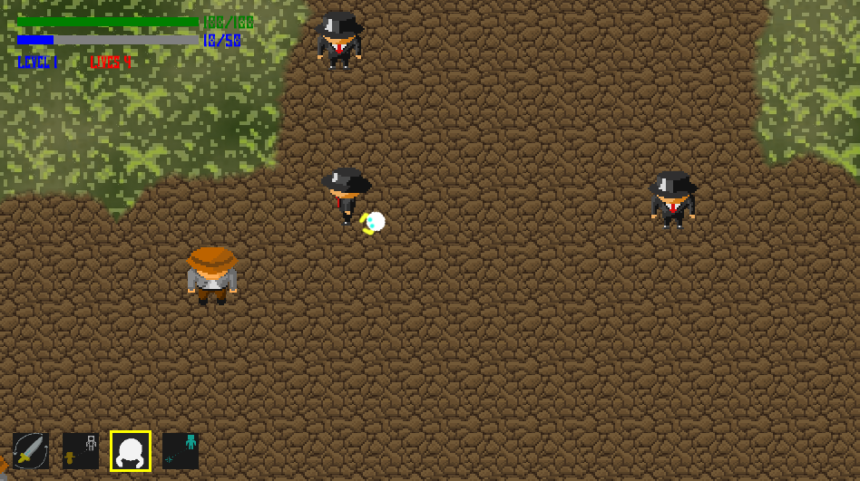

This is an adaptation of the classic game Asteroids that I made in processing and
later converted to javascript. In this version of the game, the asteroids have
been replaced by cells that grow and eventually split. The player avoids the
cells with their ship and can force the cells to split by shooting them. If a cell
splits and is too small, it dies. The cells' outline is animated by moving control
points with perlin noise and drawing a curved line through these points.
I made this minion at the end of my Senior year of high school with Autodesk
Maya. Most of the materials were made with MentalRay.
The design is relatively low-poly with just 8 sides to the eye-piece. These images
are showing the smooth mesh previews of the model.
I ended up fully rigging and weight painting the model and was planning on making
animations with it but my hard drive crashed and I lost the file.
I had even modeled and textured a closed top coffee mug for the minion based on the
coffee mug that I own.
This is a music visualizer that I made in Processing. It
starts out by showing the title coming into focus with the
use of Guassian blur. The title can be changed in the code
and is composed of small dots of varying size and color.
The dots are placed randomly based on a alpha mask of the
title which is generated on startup.
The dots also have physics functions which allow forces
to be applied to them. Using these functions, the title
is disintegrated and the main visualizer is faded in.
The main music visualizer shows the waveform for the song
at the top and the bottom as well as a large, stationary
dot in the middle which pulsates based on the minim beat
detection algorithm.
A spectrograph is also shown on the right and dots
move from right to left in the background at different
rates to give an illusion of movement. The dots differing
size and speed make it look as if the large dot is floating
through space.
At the end of the song, the ID3 tags are pulled and
information such as the song title, author, album
and duration are shown.
I created this game with Nelson Scott,
Daniel Hawk, and
Peter Lockhart during my Freshman year of college.
It was made in C# with Monogame and revolved around the concept of following a sword as it changes hands
during battle.
The game had a custom character creation feature and special abilities specific to
each of the four factions. My main role was with the map generation which was completely
procedural.

The map creation process included my own implementation of Perlin noise.
This was used to blend two background textures as well as creating the
edges of the pathways. Placement of objects and the setting of collision
boxes was also done on startup through code.
This is a stylized render of the fifth level of a game that I made with a couple
friends during my Senior year of high school. My main role during the game creation
process was 3D modeling and AI programming. I worked alongside
Dan Fisher,
who was in charge of overall game assembly in Unity and programming and
Sebastion Garcia who made the concept art, textures, level design and story.
The game ended up qualifying for national competition. I then lost the file when
my hard drive crashed.